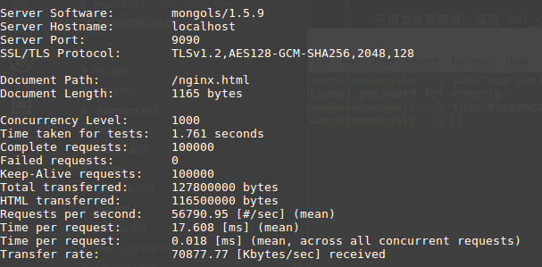
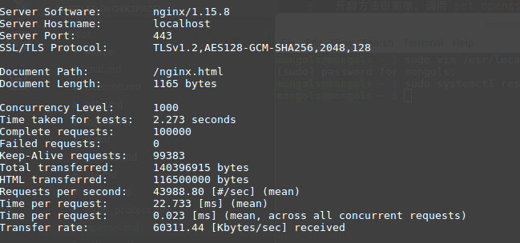

openssl 支持
mongols所包含的所有服务器设施均支持openssl化。也就是说，开发者可以为（tcp|http|resp）协议“一键”开启openssl支持。
开启方法很简单，调用set_openssl方法即可。该方法第一个参数为crt文件，第二个参数是key文件。第三个参数选择openssl协议版本(默认tlsv1.2),第四个参数是ciphers(默认AES128-GCM-SHA256),第五个参数是flags(默认SSL_OP_NO_COMPRESSION)。通常只需设置前两个参数即可。
压测比较
一句话，工作进程相同的情况下，比NGINX更快、更稳定：

